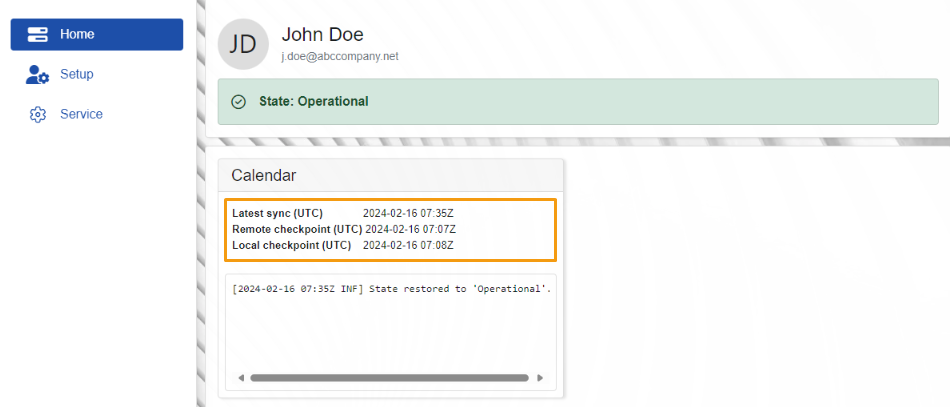

Home
The Home page offers a quick overview of MsSync’s current state.
Here, you'll see details about the app’s sync jobs, including:
- all logs recorded by each job
- the latest time they synced with Office365

States
The synchronization status indicates whether the connection between MsSync and Office365 is successful or failed.
Possible scenarios include:
Operational
The connection is stable and there aren’t any operational issues.
Error: Unauthorized or insufficient permissions
When an error occurs, it indicates a potential problem with the permissions granted for Office365 to access and modify resources from ERP, or the other way around.

To address this issue, please refer to our Service documentation.
Sync jobs
Within this panel, you'll discover details about your current synchronization jobs and their respective information.

The Latest sync (UTC) timestamp indicates the most recent confirmed synchronization.

Additiony, logs are available for all operations, including when a resource is retrieved from Office365 and when a resource is sent from ERP.

Note
The screenshots taken for this article are from v24 of the platform.